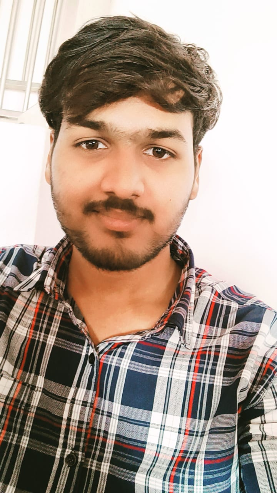

Hello, I’m Chaitanya, an aspiring web developer focused on building responsive and visually appealing websites. I am currently enhancing my skills in HTML, CSS, and JavaScript through hands-on projects and internships. Passionate Computer Science student creating modern, responsive, and user-friendly websites using web technologies.

I am Chaitanya, a passionate Computer Science Engineering student with a strong interest in web development and technology. I enjoy designing and developing responsive, user-friendly websites using HTML, CSS, and JavaScript. I am always eager to learn new tools and improve my technical skills through practical projects. My goal is to build creative and efficient digital solutions that solve real-world problems. I focus on writing clean, organized, and effective code. Through continuous learning and hands-on experience, I aim to grow as a professional web developer. I am highly motivated, dedicated, and excited to explore new opportunities in the software development field.
Creating structured webpages
Designing attractive layouts
Adding interactivity
Email: narojuchaitanya007@gmail.com
Phone: +91 9866257965